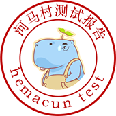

小红帽历险经历
- 天性
- 森林探险家，擅长闯荡原始森林森林探险家森林探险家，擅长闯荡原始森林森林探险家森林探险家，擅长闯荡原始森林森林探险家
- 森林探险家，擅长闯荡原始森林森林探险家森林探险家，擅长闯荡原始森林森林探险家森林探险家，擅长闯荡原始森林森林探险家
- 自我认知
- 闯荡原始森林森林探险家森林探险家，擅长闯荡原始森林森林探险家森林探险家，擅长闯荡原始森林森林探险家
- 情绪
- 长闯荡原始森林森林探险家森林探险家，擅长闯荡原始森林森林探险家森林探险家，擅长闯荡原始森林森林探险家
- 社交
- 长闯荡原始森林森林探险家森林探险家，擅长闯荡原始森林森林探险家森林探险家，擅长闯荡原始森林森林探险家
- 自我控制
- 长闯荡原始森林森林探险家森林探险家，擅长闯荡原始森林森林探险家森林探险家，擅长闯荡原始森林森林探险家